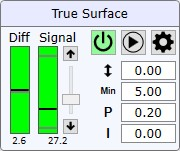
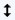
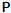
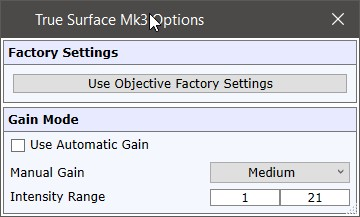

|
TrueSurface Mk3
|
TrueSurface Mk3 设备以这样的方式控制 Z 台的位置：样品表面始终与物镜保持相同距离，从而在粗糙样品上扫描时获得稳定的拉曼信号。
更多信息（操作指南）：
如果系统具有 AFM 和 TrueSurface Mk3，则仅当 WITec Control 中未加载 AFM 配置时才会显示 TrueSurface 视图。

打开/关闭 TrueSurface
打开或关闭设备。这不会启动 Z 台控制。
注意，一旦 TrueSurface Mk3 设备打开：
开始
启用或禁用 Z 台的控制。
如果听到一些奇怪的噪音（如台子振荡），请立即停止控制。
差值
显示 Z 控制器的期望值与实际值之间的差异。
灰色条显示期望值，黑色条显示实际值。
信号
显示和控制 TrueSurface Mk3 传感器的反射激光信号强度。
反射光的强度会根据样品种类而变化。
使用滑块和按钮可以调整激光强度，从而调整测得的信号。
黑色条显示当前信号强度。灰色条显示信号限制。
如果信号超出限制，控制器不会改变 Z 台。

对焦偏移此参数更改绝对 Z 偏移以优化拉曼信号。（该值不以 µm 为单位。）
最小信号 [%]
设置最小信号百分比。如果信号弱于此最小值，控制器不会改变 Z 台。

反馈 P增益设置控制器单元的 P增益。
如果 Z 台振荡则减小。如果 Z 台跟随表面太慢则增大。
反馈 I增益
设置控制器单元的 I增益。

使用物镜出厂设置
可调用当前所选物镜的默认设置（如果已定义）。
所有参数都存储了为所有用于 TSMk3 的物镜设定的默认值。
WITec 提供良好的标准值，用户可能根据不同的样品行为进行更改。
使用自动增益
如果选中，增益在更改强度时自动选择。
如果未选中，则使用以下设置。
手动增益
定义 TrueSurface Mk3 单元的增益。
强度范围
定义更改强度时使用的强度范围。